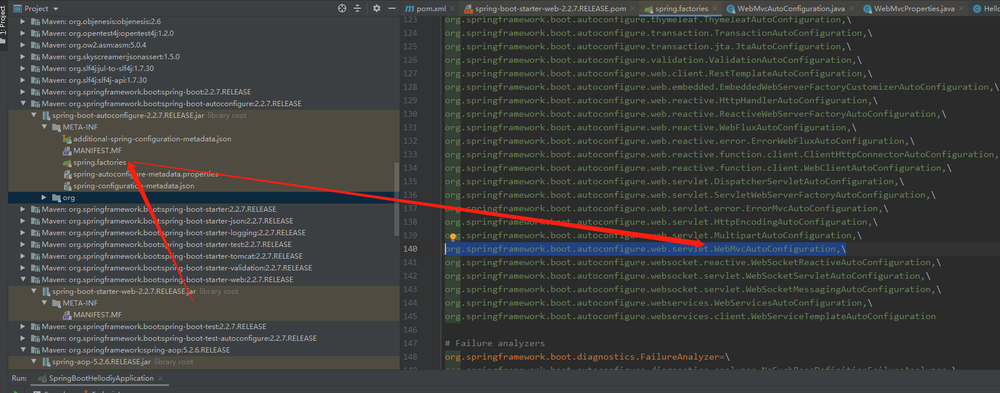
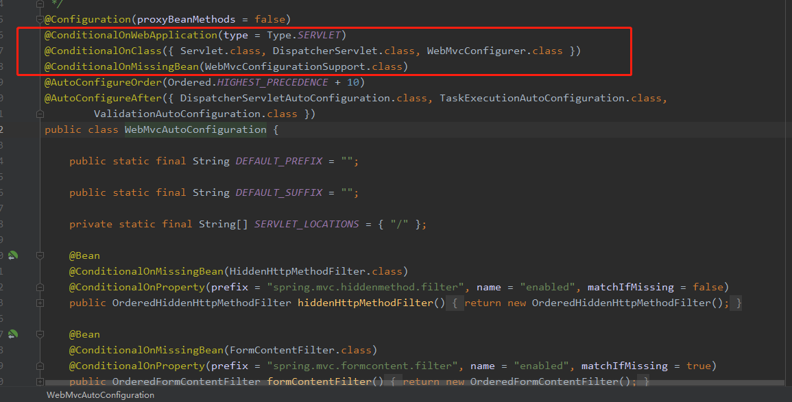
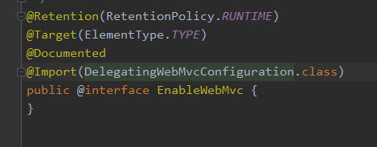
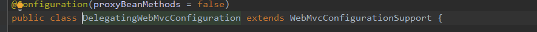
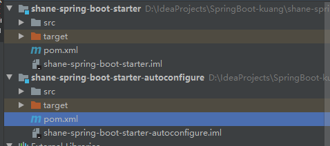
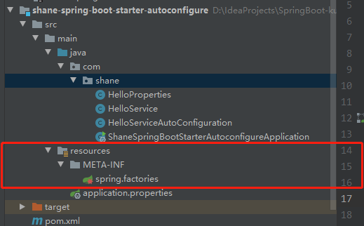
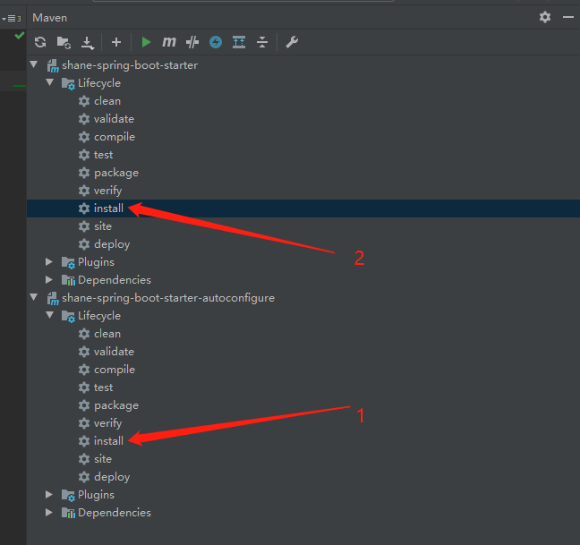
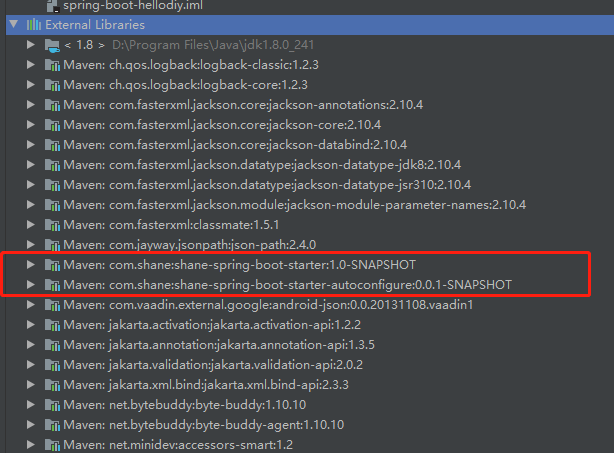
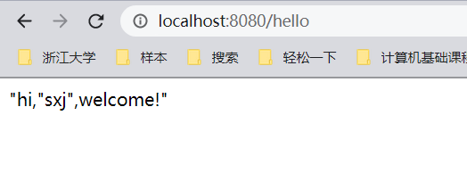

SpringBoot: diy启动类
SpringBoot启动类分析
在springboot的依赖中，我们通过添加各种启动类，可以省去很多配置的麻烦。因此要想自定义一个启动类，了解其实现也是很重要的一环。
在此，通过堆webAutoconfiguration的分析来认识一个启动类的结构。
主要包含两个项目，一个是spring-boot-starter-web,他是一个空的jar包，其依赖了autoconfiguration这个包，也就是spring-boot-starter-autoconfiguration，因此能够直接使用其中的WebMvcAutoConfiguration自动配置类。

问题来了，如果这个spring-boot-starter-autoconfiguration中的所有配置类都注册岂不是太浪费资源。解决的办法就是增加@Conditional 注解，比如对于WebMvcAutoConfiguration:

只有在其中的类存在的时候才会生效，因此这个条件很重要。
1
| @ConditionalOnMissingBean(WebMvcConfigurationSupport.class)
|
这个条件和@EnableWebMvc


矛盾，只要在一个类，比如自定义一个WebMVC配置类，上增加@EnableWebMvc注解，就会完全接管WebMvc的控制，所以官方文档建议在拓展WebMvc的配置的时候，不能增加该注解。
其实写自己启动器也就是大致5个步骤
1：编写自己具体的业务，根据自己的需求。
2：xxxProperties配置文件的编写
3：xxxAutoConfigure的编写
4：将我们的启动类放到springboot项目中的resouces/META-INT下面的spring.factories（这个目录以及文件需要自己手动建）
5：将自己编写的自动配置安装到Maven仓库即可。
6：测试。
说明
官方命名：
- 前缀：spring-boot-starter-xxx
- 比如：spring-boot-starter-web….
自定义命名：
- xxx-spring-boot-starter
- 比如：mybatis-spring-boot-starter
DIY一个启动类
1、首先新建一个空项目（Empty project）spring-boot-starter-diy
然后添加一个普通Maven模块：shane-spring-boot-starter
添加一个springboot模块: shane-spring-boot-starter-autoconfigure，删掉pom中的除spring-boot-starter之外的所有依赖。并且删除不必要的文件夹
项目结构如图：

2、在spring-boot-starter-diy的pom文件中，添加依赖
1
2
3
4
5
6
7
8
9
|
<dependencies>
<dependency>
<groupId>com.shane</groupId>
<artifactId>shane-spring-boot-starter-autoconfigure</artifactId>
<version>0.0.1-SNAPSHOT</version>
</dependency>
</dependencies>
|
3、接下来在包com.shane下新建HelloService, HelloProperties, HelloServiceAutoConfiguration
HelloService: 服务目标是，针对输入的字符串，自动增加前后缀
1
2
3
4
5
6
7
8
9
10
11
12
13
14
15
16
17
| package com.shane;
public class HelloService {
HelloProperties helloProperties;
public HelloProperties getHelloProperties() {
return helloProperties;
}
public void setHelloProperties(HelloProperties helloProperties) {
this.helloProperties = helloProperties;
}
public String sayHello(String name){
return helloProperties.getPrefix() + name + helloProperties.getSuffix();
}
}
|
HelloProperties
1
2
3
4
5
6
7
8
9
10
11
12
13
14
15
16
17
18
19
20
21
22
23
24
25
| package com.shane;
import org.springframework.boot.context.properties.ConfigurationProperties;
@ConfigurationProperties(prefix = "shane.hello")
public class HelloProperties {
private String prefix;
private String suffix;
public String getPrefix() {
return prefix;
}
public void setPrefix(String prefix) {
this.prefix = prefix;
}
public String getSuffix() {
return suffix;
}
public void setSuffix(String suffix) {
this.suffix = suffix;
}
}
|
HelloServiceAutoConfiguration
1
2
3
4
5
6
7
8
9
10
11
12
13
14
15
16
17
18
19
20
21
| package com.shane;
import org.springframework.beans.factory.annotation.Autowired;
import org.springframework.boot.autoconfigure.condition.ConditionalOnWebApplication;
import org.springframework.boot.context.properties.EnableConfigurationProperties;
import org.springframework.context.annotation.Bean;
import org.springframework.context.annotation.Configuration;
@Configuration
@ConditionalOnWebApplication
@EnableConfigurationProperties(HelloProperties.class)
public class HelloServiceAutoConfiguration {
@Autowired
HelloProperties helloProperties;
@Bean
public HelloService helloService(){
HelloService service=new HelloService();
service.setHelloProperties(helloProperties);
return service;
}
}
|
4、在resource\META-INF下新建spring.factories

1
2
3
| # Auto Configure
org.springframework.boot.autoconfigure.EnableAutoConfiguration=\
com.shane.HelloServiceAutoConfiguration
|
5、添加到Maven工程中

测试
新建一个springboot工程，并添加web依赖
添加自定义启动类的依赖
1
2
3
4
5
6
|
<dependency>
<groupId>com.shane</groupId>
<artifactId>shane-spring-boot-starter</artifactId>
<version>1.0-SNAPSHOT</version>
</dependency>
|
导入之后

成功导入jar包
编写Controller类验证
1
2
3
4
5
6
7
8
9
10
11
12
13
14
15
16
17
| package com.shane.controller;
import com.shane.HelloService;
import org.springframework.beans.factory.annotation.Autowired;
import org.springframework.web.bind.annotation.RequestMapping;
import org.springframework.web.bind.annotation.RestController;
@RestController
public class HelloController {
@Autowired
HelloService helloService;
@RequestMapping("/hello")
public String hello(){
return helloService.sayHello("sxj");
}
}
|
在配置文件appliacation.properties中添加
1
2
| shane.hello.prefix="hi,"
shane.hello.suffix=",welcome!"
|
运行：
